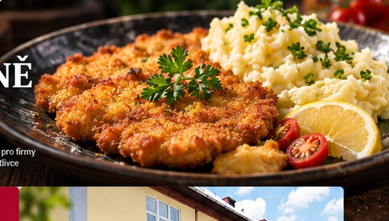

Každý den pro vás připravujeme pestrou nabídku obědů. Prohlédněte si aktuální jídelní lístek.
| Den | Hlavní jídlo | Alergeny | Cena | |
|---|---|---|---|---|
| PONDĚLÍ 19.10. | Polévka | Písmenková | 1,3,7 | 45 Kč |
| Menu č. 1 | Těstovinové rizoto s kuř. masem a zeleninou, sýr, okurek | 1,3,7 | 130 Kč | |
| Menu č. 2 | Vepřové nudličky v pepřové omáčce, dušená rýže | 1,3,7 | 130 Kč | |
| Menu č. 3 | Moravský vrabec, zelí, houskový knedlík | 1,3,7 | 130 Kč | |
| Menu č. 4 | Vepřové maso, opečené brambory, tatarka | 1 | 135 Kč | |
| ÚTERÝ 20.10. | Polévka | Pórková | 1,3 | 45 Kč |
| Menu č. 1 | Frankfurtská pečeně, těstoviny | 1,3,7 | 130 Kč | |
| Menu č. 2 | Srbské rizoto, sýr, okurek | 1,3,7 | 130 Kč | |
| Menu č. 3 | Vepřový guláš, bramborový knedlík | 1 | 130 Kč | |
| Menu č. 4 | Řízek, bramborový salát | 1,3,7 | 135 Kč | |
| STŘEDA 21.10. | Polévka | Francouzská krémová | 1,7 | 45 Kč |
| Menu č. 1 | Francouzské brambory, okurka | 1,3,7 | 130 Kč | |
| Menu č. 2 | Kuřecí plátek, brambory | 1,3,7 | 130 Kč | |
| Menu č. 3 | Kuřecí přírodní řízek se sýrem | 1,3,7 | 130 Kč | |
| Menu č. 4 | Zapečené těstoviny se zeleninou a sýrem | 1,3,7 | 135 Kč | |
| ČTVRTEK 22.10. | Polévka | Pytlácká | 1,7 | 45 Kč |
| Menu č. 1 | Kuřecí nudličky na kari a pórku, těstoviny | 1,3,7,9 | 130 Kč | |
| Menu č. 2 | Kari rýže, dušená rýže | 1,3 | 130 Kč | |
| Menu č. 3 | Svíčková na smetaně, houskový knedlík | 1,3,7 | 130 Kč | |
| Menu č. 4 | Smažený sýr se šunkou, opečené brambory, tatarka | 1,3,7 | 135 Kč | |
| PÁTEK 23.10. | Polévka | Zeleninová s párkem | 1,3,7 | 45 Kč |
| Menu č. 1 | Dušená čočka na kyselo, vejce, chléb | 1,3,7 | 130 Kč | |
| Menu č. 2 | Španělský ptáček, dušená rýže | 1,3 | 130 Kč | |
| Menu č. 3 | Kuřecí řízek, brambory | 1,3,7 | 130 Kč | |
| Menu č. 4 | Vepřový řízek, brambory, tatarka | 1,3,7 | 135 Kč |